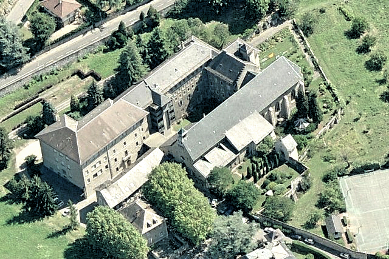

L'ÉGLISE EN QUELQUES MOTS
Il s'agit de l'église et de la paroisse d'origine de Ségolène.
L'église est bâtie sur les hauteurs du centre-ville de Chambéry, sur la colline de Lémenc, qui constitue les premières pentes du massif des Bauges à l’est de la ville.
Bâtie sur les vestiges d'un temple romain dédié au dieu Mercure, possiblement à partir du VIème siècle, l'église serait à ce titre la plus ancienne de Chambéry et l'une des plus anciennes de Savoie. Elle conserve une partie de l’architecture romane de l'église du XIè siècle ainsi que l'architecture gothique de sa reconstruction au début du XVIè siècle. Elle comporte par ailleurs une crypte contenant une rotonde pouvant dater du IXè siècle au XIè siècle, des peintures murales de la Renaissance et une mise au tombeau (sépulcre) du XVIè siècle.
Article Wikipédia ADRESSE DE L'ÉGLISE
18 Rue Burdin
73000 Chambéry
POINTS D'INTÉRÊT AUTOUR DE L'ÉGLISE
Le repaire de maman Borson et de ses acolytes du conseil municipal